Povratak na početnu stranicu.
Sve dosadašnje vježbe s kolegija Digitalni multimedij 1
Prva vježba
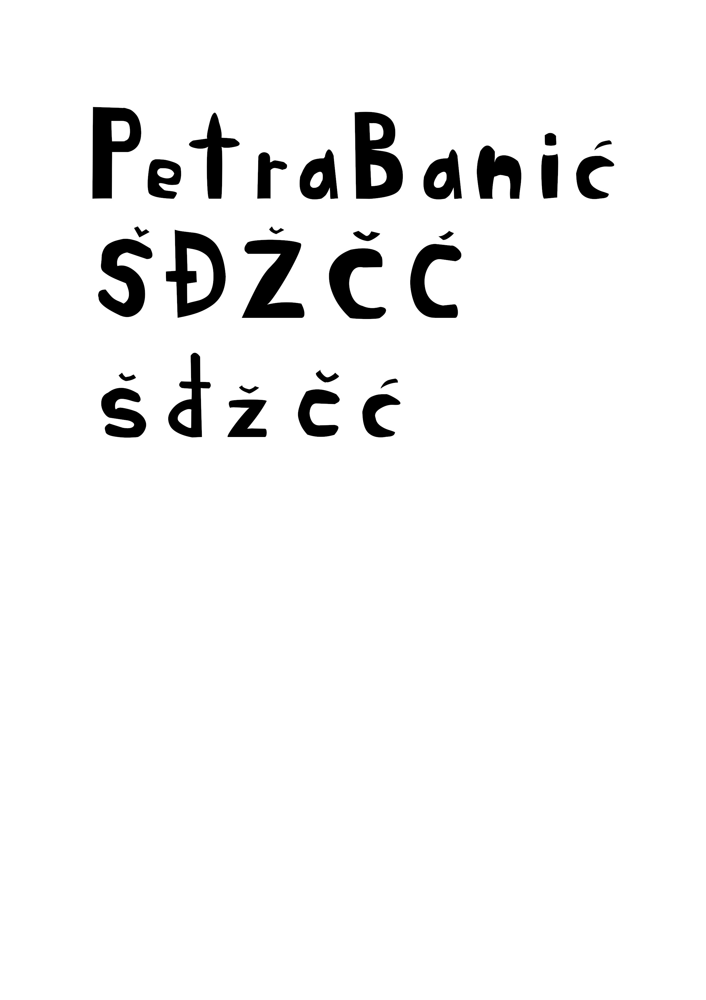
Objašnjenje: Izrada fonta
Druga vježba

Objašnjenje: Bezierove krivulje
Treća vježba
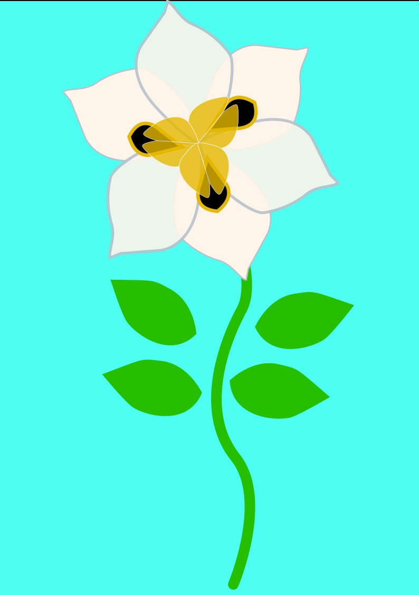
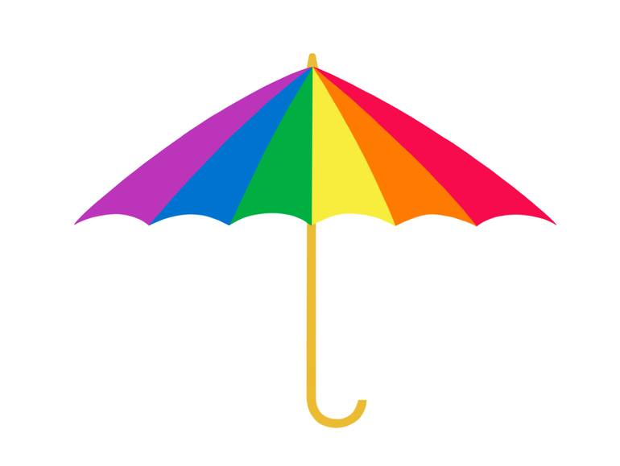
Objašnjenje: Oblikovanje elemenata
Četvrta vježba
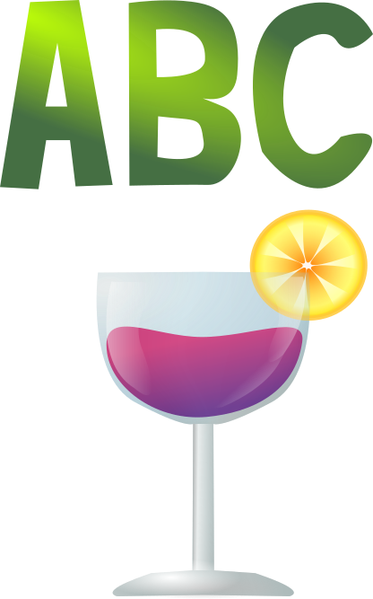
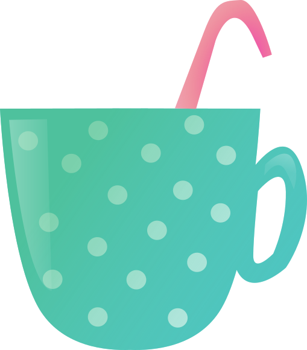
Objašnjenje: Sjene
Prvi projektni zadatak
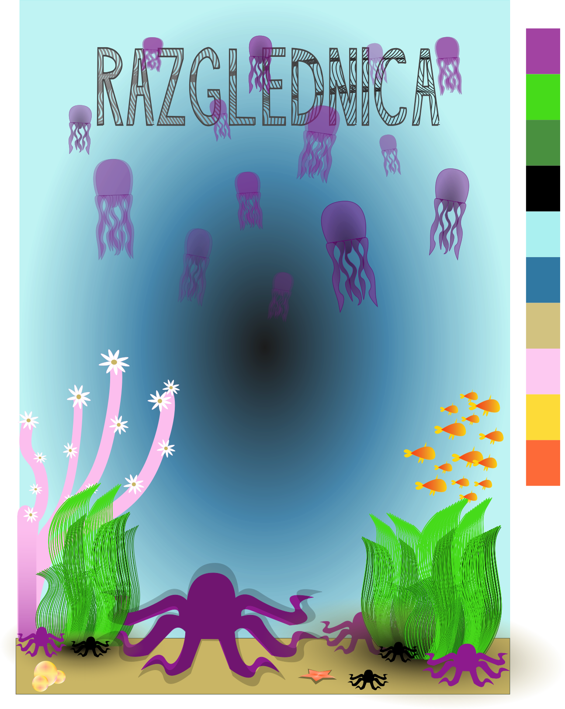
Objašnjenje: Spoj svih elemenata iz prethodna 4 zadatka
Peta vježba
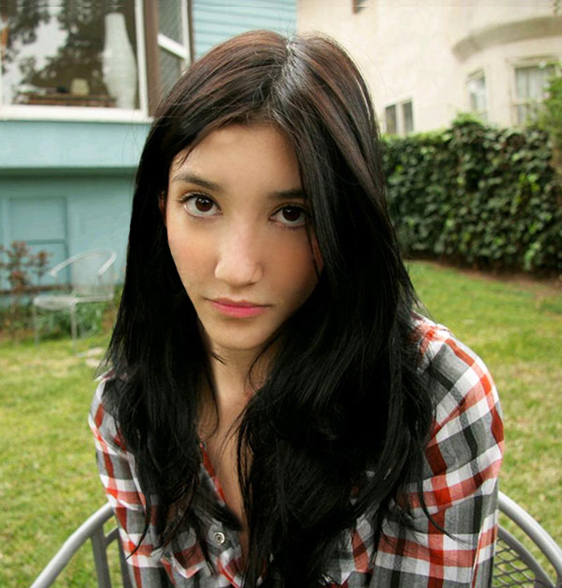
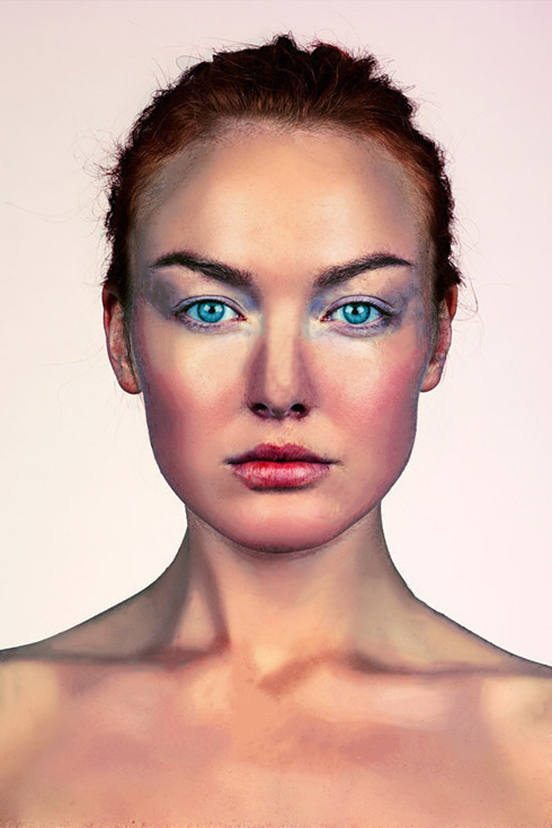
Objašnjenje: Retuširanje
Šesta vježba
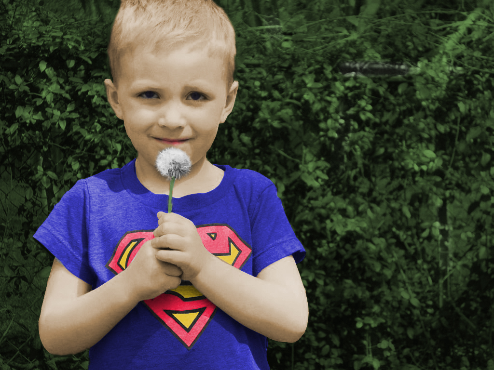
Objašnjenje: Koloriranje
Sedma vježba
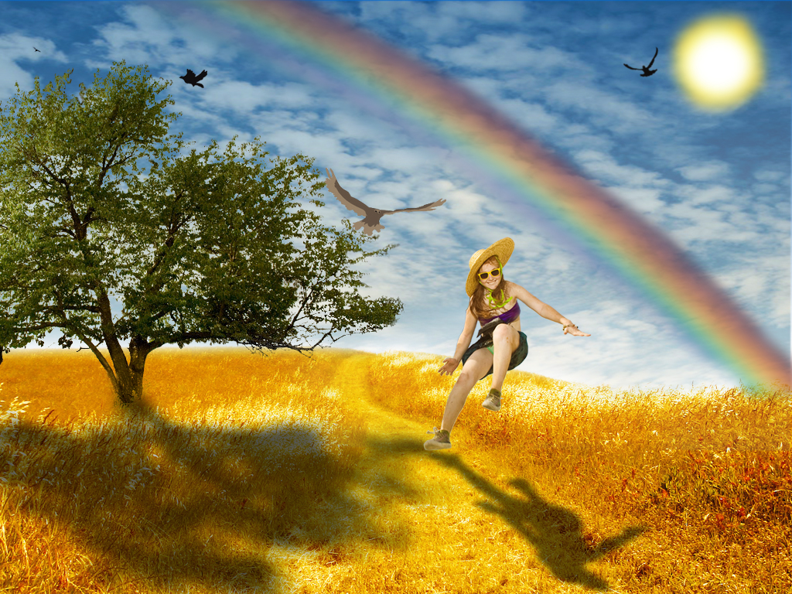
Objašnjenje: Fotomontaža
Drugi projektni zadatak
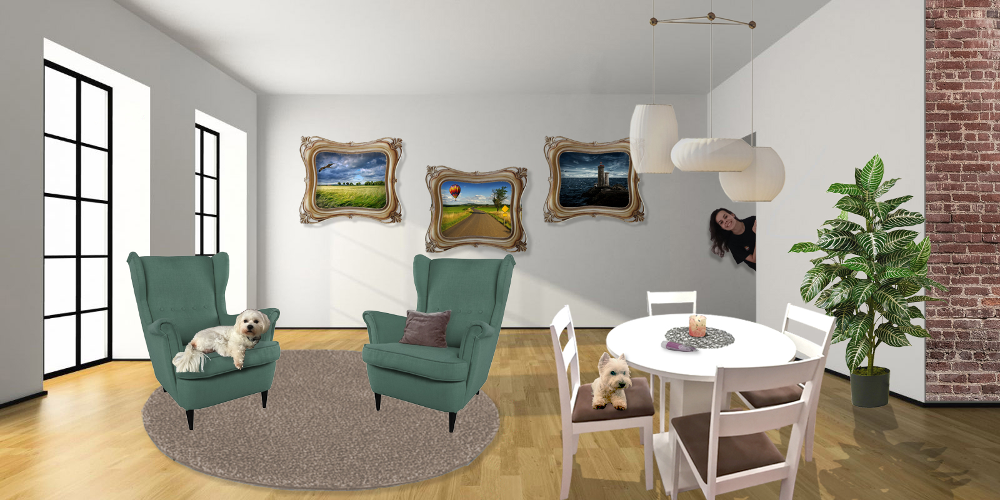
Objašnjenje: Spoj svih elemenata iz prethodna 3 zadatka
Osma vježba
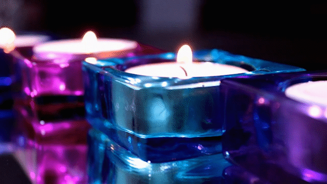
Objašnjenje: Kinemagraf (gif)
Deveta vježba
Objašnjenje: Obrada videa i zvuka
Navigacijska lista s linkovima: